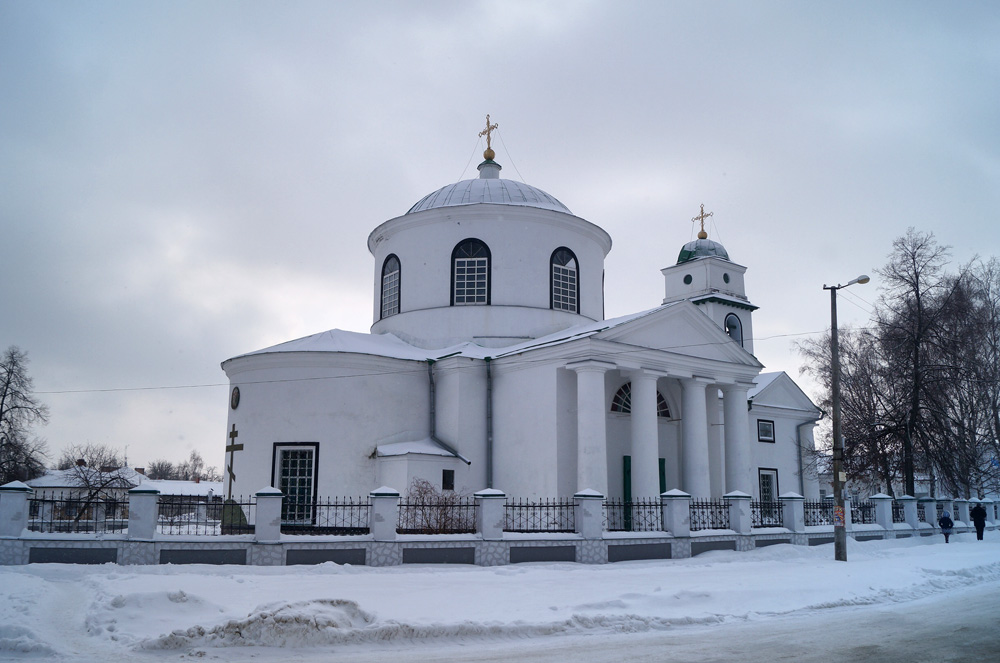

Котельва - це місто в Полтавській області, засноване ще у далекому 1582 році. Населений пункт налічує близько 12 тис. осіб на сьогоднійшній день, та сягає площі 26,87 км². На цій сторінці хочу привести декілька зображень з написами.
Свято-Троїцький храм

Пам'ятник ветерану війни Сидору Артемовичу Ковпаку